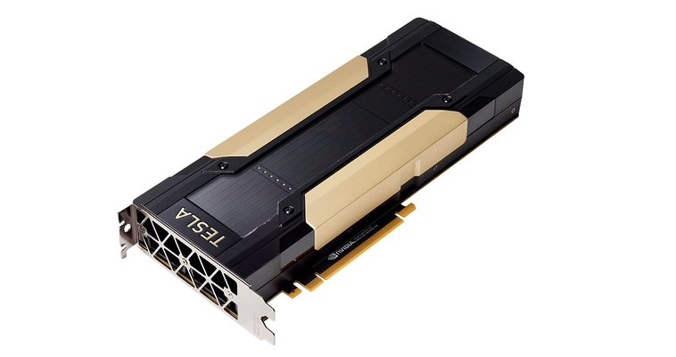
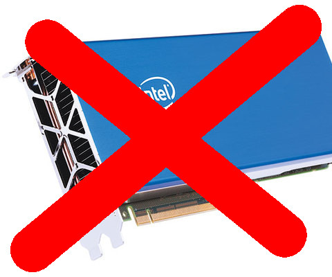
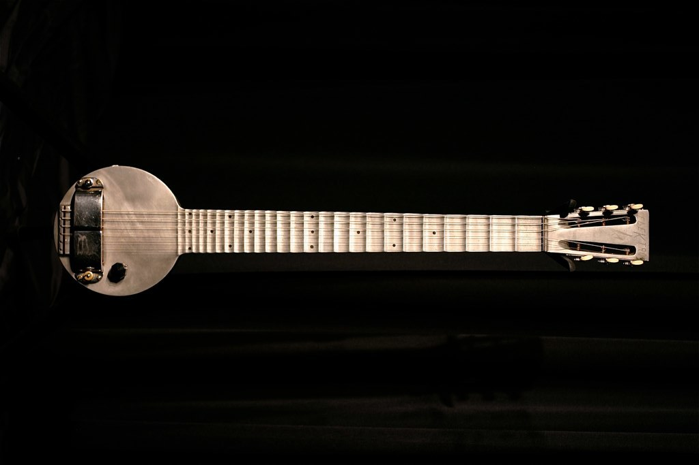

GPU APIs
Peter Steinbach
steinbac@mpi-cbg.de
TUD, January 15, 2017
Massively Parallel Programming
Yet Another Hype?
Data obtained from Top500.org
Vendor Options
Nvidia Tesla

AMD Radeon Instinct

Intel MIC

Vendor flag ships
- GV100 chipsets
- 16 GB HBM2
- 900 GB/s to RAM
- 15 TFlops SP
- 7.5 TFlops DP
- 1x Vega
- 16 GB HBM2 RAM
- 700-900 GB/s to RAM
- 12.5 TFlops SP
Architecture
From a high level
Kepler SMX Close-up
SIMT Execution
Warp
- smallest unit of concurrency: 32 threads
- thread = single CUDA core
- all threads execute same program
Block
- can synchronize (barriers)
- can exchange data (common "shared" memory, etc.)
Grid
- grids/blocks serve as work distribution/sharing mechanism on device (occupancy)
- blocks dispatched to SMX (in turn run warps)
Data Locality
Keep data put as long as possible!
Summary Architecture
GPUs are complicated beasts
massive parallel compute power (per Watt)
- any API needs to support the above
APIs today?
A Word of Warning!
32 threads is the minimum
- good tools are rare and almost never portable
Use a Library!
Baseline Example
void vector_sum(std::vector<float>& a,
float scale, const std::vector<float>& b) {
for (int i=0; i<a.size(); i++)
a[i] = a[i] + b[i];
} Vector Sum
Example: BabelStream Benchmark
CUDA Overview
freeware tool suite, gpu library package and low/high level API(s)
CUDA platform supports C and C++ with proprietary compiler
binaries run on Nvidia hardware only
source code split into host and device part
host : C++11/14 and STL supported
device: subset of C++11/14 (no exceptions, no iostream, no virtual inheritance, no STL)
5 Simple Steps In CUDA
- Declare and allocate host and device memory.
- Initialize host data.
- Transfer data from the host to the device.
- Execute one or more kernels (vector sum).
- Transfer results from the device to the host.
CUDA Code: Mem Init
int main(/*..*/){//..
std::vector<float> host_a(vsize,1.f);
std::vector<float> host_b(vsize,2.f);
float * device_a=nullptr, *device_b=nullptr;
cudaMalloc(&device_a, vsize_byte);
cudaMalloc(&device_b, vsize_byte);
cudaMemcpy(device_a, &host_a[0], vsize_byte,
cudaMemcpyHostToDevice);
cudaMemcpy(device_b, &host_b[0], vsize_byte,
cudaMemcpyHostToDevice);CUDA Code: Compute
//above main
__global__ void vector_sum(std::size_t _size,
float* _a, float* _b){
std::size_t index = blockIdx.x*blockDim.x + threadIdx.x;
if (index < _size)
_a[index] = _scale*_a[index] + _b[index];
}
//in main: dispatch to device
vector_sum<<<(vsize+255)/256, 256>>>(vsize,
device_a,
device_b);CUDA Code: Mem TX + Clean-up
//transfer memory back
cudaMemcpy(&host_a[0], device_a, vsize_byte,
cudaMemcpyDeviceToHost);
//clean-up
cudaFree(device_a);
cudaFree(device_b);
return 0;
}
CUDA Wrap-up
free and working
CUDA comes with a ton of tools (debugger, profiler, libraries, ...)
CUDA comes with a ton of examples
very flexible (device instrinsics, locked memory handling, ...)
nVidia very active in porting scientific applications
nVidia very active C++ standardisation (Parallelism TS)
plain C runtime API on host (memory allocation, error handling, asynchronous calls, ...)
grid dispatch is error prone (code repetition in index calculation)
compiler is sometimes hard to come by (using boost, OpenMP interoperability)
__keyword__disrupt design (redundancy, maintainability)
CUDA is like ...
OpenCL
open, royalty-free standard for cross-platform, parallel programming
designed to run on CPUs, GPUs, FPGAs, DSPs, ...
maintained by non-profit technology consortium Khronos Group
source code split into host and device part
host : C/C++ based API (lower level than CUDA)
device: C99 (OpenCL <2) or C11 derived language (OpenCL 2.0)
Standardisation
- OpenCL 2.2 out since May 16, 2017 (C++14 in kernels, SPIR-V 1.1 as intermediate language)
Implementers
OpenCL eco system
OpenCL API flow
OpenCL Kernel
const char *kernelSource = "\n" \
"__kernel void vecAdd( __global float *a, \n" \
" __global float *b, \n" \
" __global float *c, \n" \
" const unsigned int n) \n" \
"{ \n" \
" int id = get_global_id(0); \n" \
" \n" \
" //Make sure we do not go out of bounds \n" \
" if (id < n) \n" \
" c[id] = a[id] + b[id]; \n" \
"} \n" \
"\n" ;OpenCL is like ...
OpenCL Translation Table
OpenCL
local memory
private memory
CUDA
shared memory
local memory
NDRange (index space)
work group
work item
grid
block
thread
Boost.Compute
OpenCL wrapper enabling vendor independent parallel algorithms
compute::device gpu = compute::system::default_device();
compute::context ctx(gpu);
compute::command_queue queue(ctx, gpu);
compute::vector<float> device_a(a.size(), ctx);//etc..
compute::copy(host_a.begin(), host_a.end(),
device_a.begin(), queue);//etc..
compute::transform(device_a.begin(),device_a.end(),
device_a.begin(),compute::add<float>(),queue);OpenCL Summary
free
CPU+GPU+...
vendor independent, standardised API
write kernels once, dispatch anywhere (performance portability)
backwards compatible (long term support)
wrappers look promising (boost.compute)
plain C runtime API on host + device (memory allocation, error handling, asynchronous calls, ...)
more explicit than CUDA
no good tooling (debuggers, profilers, ...)
kernels as strings? (runtime reveals bugs)
kernels written in C99 originally
thrust
open source (Apache v2 license)
interoperability with CUDA, TBB and OpenMP (possible backends)
- high level interface compared to CUDA/OpenCL
thrust Code: Functor
struct saxpy_functor :
public thrust::binary_function<float,float,float>
{
const float a;
saxpy_functor(float _a) : a(_a) {}
__host__ __device__
float operator()(const float& x,
const float& y
) const {
return a * x + y;
}
};thrust Code: GPU dispatch
int main(//...){//..
thrust::host_vector<float> host_a(N,1.f);
thrust::host_vector<float> host_b(N,2.f);
thrust::device_vector<float> dev_a = host_a;
thrust::device_vector<float> dev_b = host_b;
thrust::transform(dev_a.begin(),dev_a.end(),
dev_b.begin(),
dev_a.begin(),
saxpy_functor(scale));
}thrust Wrap-up
C++ and STL for GPUs (and CPUs)!
container and algorithm API well thought through
code becomes readable/maintainable (at least for a C++Dev)
algorithms can be dispatched from device kernels as well
- many examples, active community
loss of flexibility:
host-device i/o (pinned memory allocator considered experimental)
index information only available through kernel built-ins
grid distpatch of kernel by thrust library (occupancy)
kernel optimisations = CUDA (CUB library?)
thrust is like ...
HCC
All-purpose GPUs
single source C++ compiler (for CPU, GPU and some APU targets)
supports C++AMP 1.2, HC, OpenMP 4, C++1x
HCC Vector Sum (C++AMP)
using namespace concurrency;
void amp_sum(vector<float>& _va,
const vector<float>& _vb,
float _scale){
extent<1> ext_a(_va.size()),ext_b(_vb.size());
array_view<float, 1> view_a(ext_a,_va);
array_view<const float, 1> view_b(ext_b,_vb);HCC continued
parallel_for_each(view_a.get_extent(),
[=](index<1> idx) restrict(amp)
{
view_a[idx] = view_a[idx]*_scale + view_b[idx];
}
);
view_a.synchronize();
}HCC Wrap-up
API focusses on problem-solving and flexibility
API appears to be lightweight (array views)
multiple binary backends (SPIR-V, OpenCL, ...)
multiple hardware backends (CPU, GPU, APU)
homogenous C++ source code
function continuations supported
future1.then(future2)//..
young project, API still fluid (
concurrency::=>hc::)no tooling yet (debugger, profiler, ...)
performance yield unclear
combined API for integrated and discrete GPUs
HSA/AMD road map unclear
HC is like ...

1932, by Museum of Making Music at English Wikipedia
{kind=link}
Pragma based approaches
void vector_sum(int size, float scale,
float * restrict a, float * restrict b) {
#pragma omp target map(to:b[0:n], size, scale) map(a[0:n])
{
#pragma omp parallel for
for (int i=0; i<size; i++) {
a[i] = a[i] * scale + b[i];
}
}
}Pragmas continued
void vector_sum(int size, float scale, float *a, float *b) {
#pragma acc parallel copy(a[0:size]) copyin(b[0:size])
#pragma acc loop
for (int i = 0; i < size; ++i)
a[i] = scale*a[i] + b[i];
}Pragma Wrap-up
OpenMP is (already) a success story (why not OpenACC as well)
dream: one-line injection and code is fast
strong industrial support (tooling)
GPU: perfect fit for upgrading legacy code or prototyping
OpenMP works well on shared memory CPUs
(discrete) GPUs have different architecture than CPUs
language in a language ??
OpenACC, OpenMP dichotomy (will users/applications loose?)
Pragmas are like ...
by Alno
{kind=link}
What's next?
C++17
Published already:
Parallelism TS, Concurrency TStransform( std::experimental::parallel::par,
std::begin(a), std::end(a),
std::begin(b),
std::begin(a)
[&](float& a, const float& b) {
a = scale*a + b;
});vendors plan to support this with
std::parallel::cudaC++17 and host-device interaction
future<int> f1 = copy_to_device();
future<int> f2 = f1.then([](future<int> f) {
future<int> f3 = start_compute();
return f3;
});
future<int> f3 = f3.then([](future<int> f){
return copy_to_host();
}
);taken from concurrency TS
better API to coordinate asynchronous transfers and computations
future: use
(a)wait/thenand friends to express data dependencies- support by compiler vendors needed
Summary
in production: almost dominated by C99 or C99-like APIs
on the horizon: performant, flexible and maintainable C++ APIs emerging (cub/thrust, boost.compute, sycl, ...)
GPUs architecture is complex: obtaining max. performance challenging
Acknowledgements
Robert Haase, Ian Henry, Benoit Lombardot, Jeff Oegema
Guido Juckeland, Thomas Karnagel, René Widera, Erik Zenker
Greg Stoner, Ben Sander, Chan SiuChi; Jack Chung
Axel Köhler
Thank you!

For Questions, Comments, Complaints, Compliments, ...
github.com/psteinb/gpu-lecture-APIs